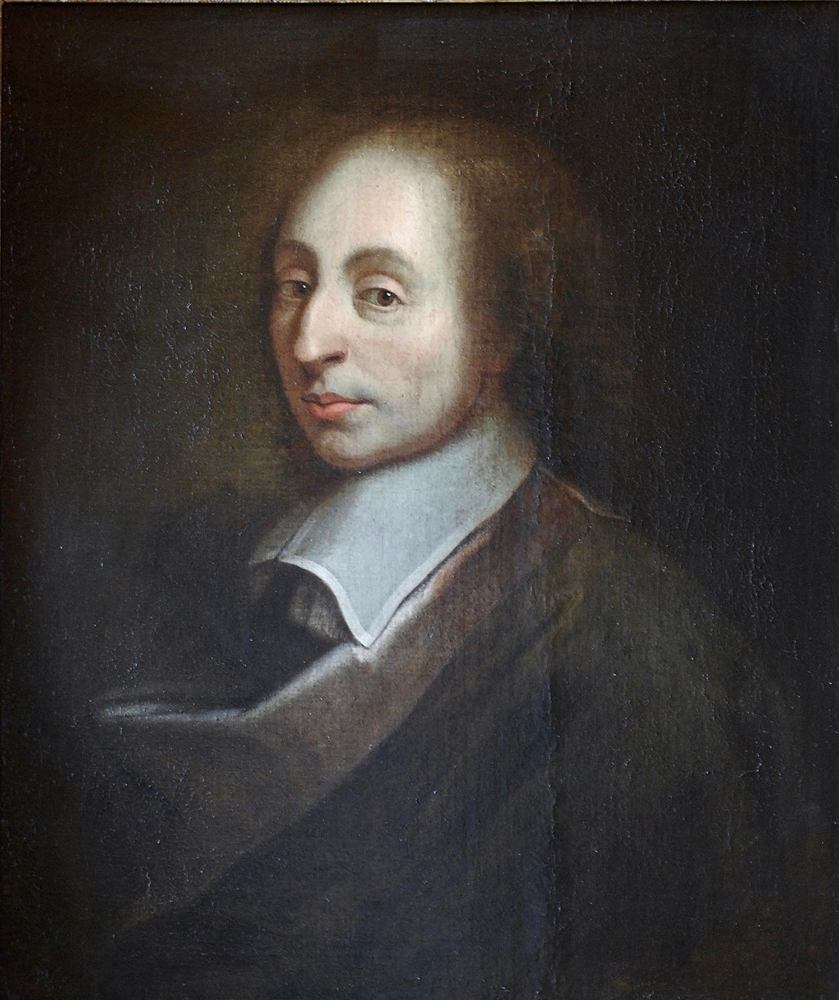
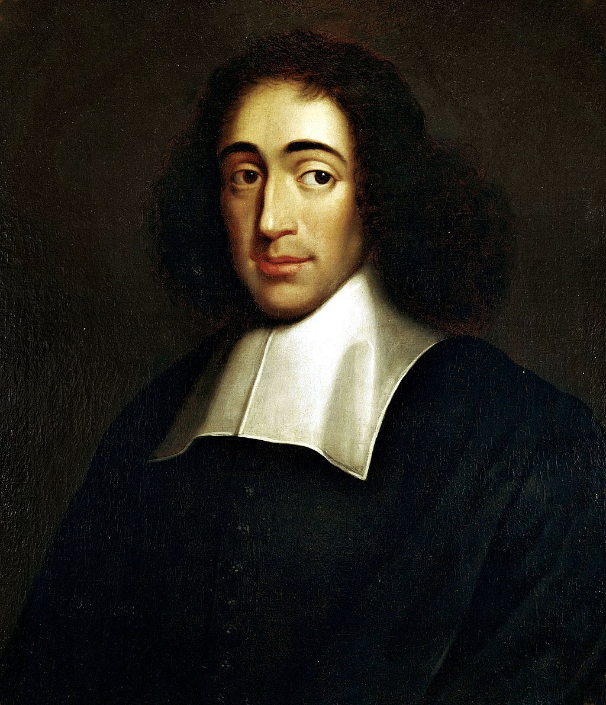
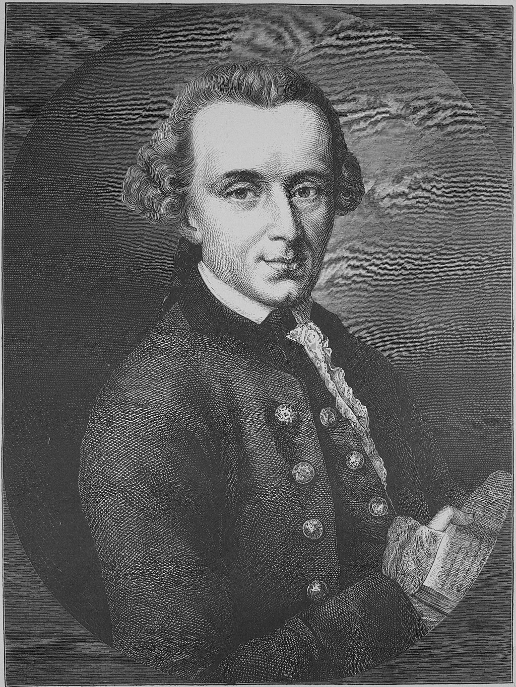
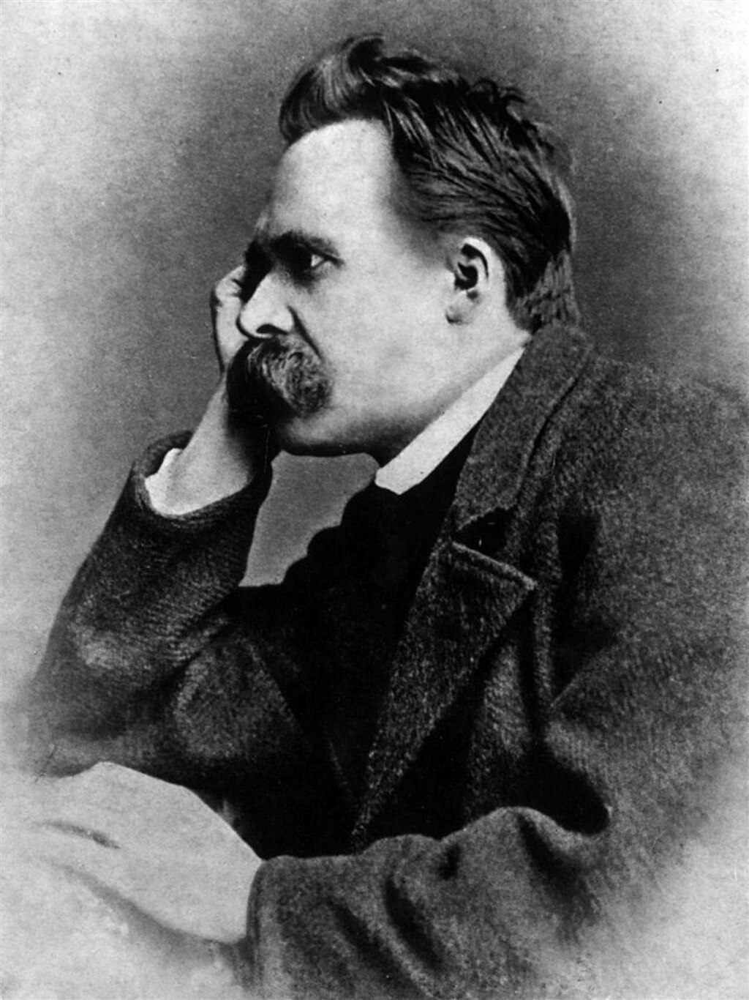
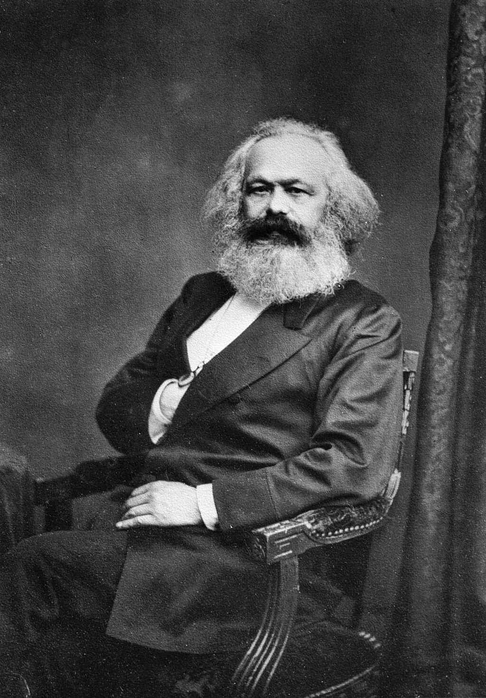
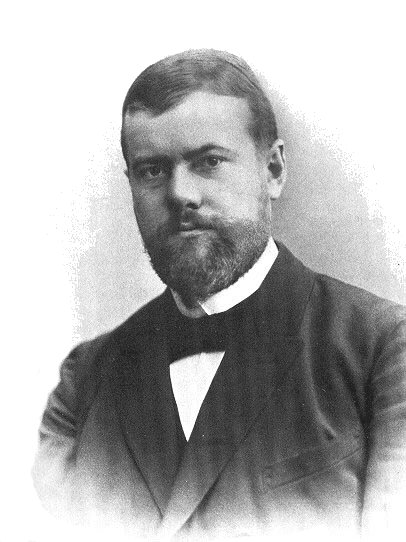
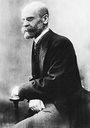
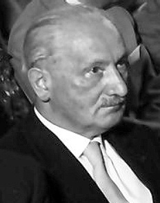

Blaise Pascal: francuski intelektualista: matematyk, fizyk, inżynier-wynalazca, filozof, teolog i literat.

Baruch Spinoza: filozof niderlandzki pochodzenia portugalsko-żydowskiego, konkretniej sefardyjskiego; z zawodu rzemieślnik optyczny. Zajmował się metafizyką, filozofią umysłu, filozofią religii, etyką i filozofią polityki.

Immanuel Kant: niemiecki filozof, profesor logiki i metafizyki na Uniwersytecie Albrechta w Królewcu. Jeden z najwybitniejszych reprezentantów oświecenia.

Georg Wilhelm Friedrich Hegel: filozof, uznawany za najważniejszego przedstawiciela idealizmu niemieckiego, pierwszego filozofa nowoczesnego, a jednocześnie ostatniego z filozofów wielkich systemów.

Friedrich Wilhelm Nietzsche: niemiecki filozof, filolog klasyczny, prozaik i poeta, jeden z założycieli (obok Wilhelma Diltheya) nurtu filozoficznego filozofii życia w Niemczech.

Karl Marx: niemiecki filozof, socjolog, ekonomista, historyk, dziennikarz i działacz rewolucyjny pochodzenia żydowskiego. Twórca komunizmu, współzałożyciel I Międzynarodówki.

Karl Emil Maximilian „Max” Weber: niemiecki socjolog, filozof, prawnik i ekonomista, którego idee miały ogromny wpływ na teorię socjologiczną i badania społeczne. Wraz z Émilem Durkheimem i Karolem Marksem jest uznawany za ojca socjologii..

Emile Durkheim: francuski filozof, socjolog i pedagog.

Martin Heidegger: niemiecki filozof; zajmował się głównie zagadnieniami z zakresu fenomenologii, hermeneutyki i egzystencjalizmu. Myśl filozoficzna Heideggera bywa uznawana za jedną z najważniejszych w filozofii XX wieku.